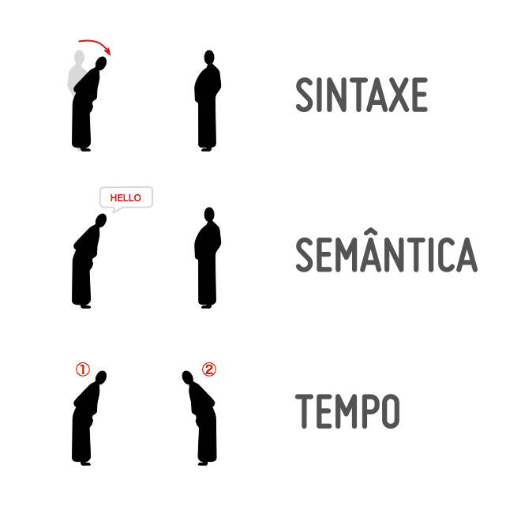

As linguagens da web

Não precisa ser a versão 5, mas √© melhor üòÑ
O estilista da web
A linguagem de programação da Web
Não confunda üòâ


O que acontece quando você digita um endereço no browser?
O servidor web é como um mordomo
| HTTP | 80 |
| HTTPS | 443 |
| FTP | 21 |
| SMTP | 25 |
| SSH | 22 |
| Sites Estáticos | Sites Dinâmicos |
|---|---|
| Conteúdo de arquivos hospedados | Conteúdo gerado por um programa |
| Conteúdo sempre o mesmo | Diferente em certas condições |
| HTML, CSS e JavaScript | PHP, Ruby, Python, C++, etc |
| Acessa somente dados do computador do cliente | Pode acessar sistemas de banco de dados |
A programação web acontece em códigos relevantes para o cliente e códigos relevantes para o servidor.
üëÜ websites dinâmicos

O protocolo dos navegadores e servidores web
O HTTP é o protocolo de comunicação utilizado pelos navegadores e servidores web. Quando o navegador solicita uma página web é chamado de requisição e quando o servidor web envia a página solicitada de volta é chamado de resposta.
O que é um protocolo de comunicação?
Protocolos não se misturam
| Português | Inglês |
|---|---|
| Requisição | Request |
| Resposta | Response |
| Método | Method |
| Caminho | Path |
| Cabeçalhos | Headers |
| Conteúdo/Corpo | Content/Body |
| Código de estado | Status code |
A requisição feita pelo cliente
GET /?page_id=220 HTTP/1.1
Host: portal.fanese.edu.br
Esta requisição tem o conteúdo vazio!
A resposta entregue pelo servidor
HTTP/1.1 200 OK
Date: Mon, 31 Jul 2017 21:15:35 GMT
Content-Type: text/html;charset=UTF-8
Server: Apache
<!DOCTYPE html>
<html lang="pt-BR">
…
Baixe o Insomnia em https://insomnia.rest/
O identificador de endereços na Internet.
| GET |
A requisição mais comum de todas. Usamos para obter um recurso do servidor. |
|---|---|
| POST | Usamos para solicitar alterações no lado servidor. |
| PUT | Substitui o conteúdo de um recurso. |
| DELETE | Remove um recurso especificado. |
| TRACE | Raramente usados por desenvolvedores web |
| OPTIONS | |
| PATCH | |
| CONNECT | |
| HEAD |
GET /blog/ HTTP/1.1
Host: www.exemplo.com.br
User-Agent: Mozilla/5.0 (Linux x86) Chrome/59.0
Accept: text/html
Accept-Charset: UTF-8
Accept-Language: pt-br
Cookie: Variant=1; Theme=blue;
Referer: http://exemplo.com/index.html
If-Modified-Since: Sat, 07 Aug 2017 21:18:31 GMT
↔️ Linha de requisição (método/caminho/versão)
↔️ O servidor desejado
↔️ A identificação do browser
↔️ O tipo de conteúdo esperado pelo browser
↔️ A codificação de caracteres esperada
↔️ O idioma esperado pelo browser
↔️ O browser envia os cookies armazenados
↔️ Browser envia site que originou a requisição
↔️ Faz uma requisição condicional
POST /blog/cadastro.php HTTP/1.1
Host: www.exemplo.com.br
Accept: text/html
Accept-Charset: UTF-8
Accept-Language: pt-br
Content-Type: application/x-www-form-urlencoded
Content-Length: 35
Cookie: Variant=1; Theme=blue;
name=John+Darling&address=Neverland
↔️ O tipo de conteúdo do corpo da requisição
↔️ O tamanho em bytes do corpo da requisição
üîµÔ∏è O corpo da requisi√ß√£o

HTTP/1.1 200 OK
Content-Type: text/html; charset=utf-8
Content-Lenght: 27855
Set-Cookie: Variant=1; Theme=blue;
Cache-Control: max-age=3600
<!DOCTYPE html>
<html lang="pt-BR">
…
↔ Código de estado da resposta
↔️ O tipo de conteúdo do corpo da resposta
↔️ O tamanho em bytes do corpo da resposta
↔️ O servidor envia cookies para o browser armazenar
↔️ O servidor indicando para o cliente fazer cache
üîµÔ∏è In√≠cio do corpo da resposta
üîµ
üîµ
HTTP/1.1 301 Moved Permanently
Location: https://www.wikipedia.org/
Content-Type: text/html; charset=iso-8859-1
Content-Length: 234
<!DOCTYPE HTML PUBLIC "-//IETF//DTD HTML 2.0//EN">
<html><head>
<title>301 Moved Permanently</title>
…
↔️ Local para onde o browser deve redirecionar
Estrutura geral
tipo/subtipo
Exemplos
text/plain
text/html
text/css
text/javascript
image/jpeg
image/png
audio/mpeg
audio/ogg
audio/*
video/mp4
application/octet-stream